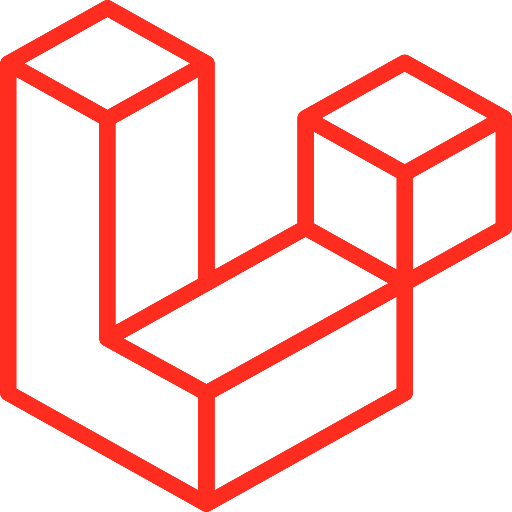
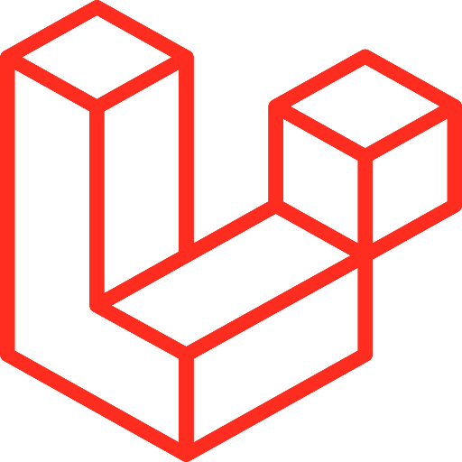

Skills


Aan de hand van mijn iconen toon ik mijn programmeer talen aan, deze talen zijn HTML, CSS en javascript. oftewel de bais. Ik heb redelijk ervaring met de basis dus vandaar dat ik deze opnoem.


Met de FrontEnd frameworks heb ik ervaring met SCSS, VueJS en React. Ik heb deze moeten gebruiken op school, op stage of op mijn werk dus ik heb op die manier mijn vaardigheden rondom die talen verbeterd.

 

De BackEnd talen zijn php, mySQL en Laravel. Doormiddel van deze talen te beheersen kan ik een funcitonele database maken en CRUD systeem. Ik heb php & MySQL op school geleerd en ook gebruikt voor kleine projecten. Laravel gebruik ik op de werk plek.